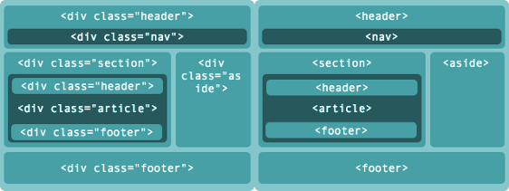

HTML5 é a mais recente evolução do padrão que define o HTML. O termo representa dois conceitos diferentes: É uma nova versão da linguagem HTML, com novos elementos, atributos, e comportamentos e um conjunto maior de tecnologias que permite o desenvolvimento de aplicações e web sites mais diversos e poderosos. Este conjunto é chamado HTML5 & friends e muitas vezes abreviado apenas como HTML5. Criada para ser utilizável por todos os desenvolvedores da Web Aberta, essa página de referências faz ligações a inúmeros recursos do HTML5, classificados em diversos grupos, baseando-se em suas funções; Semântica: permite você descrever mais precisamente o seu conteúdo. Conectividade: permite uma comunicação com o servidor de formas modernas e inovadoras. Offline e armazenamento: Permite que páginas web armazenem dados localmente do lado do cliente e opere de forma offline mais eficientemente. Multimídia: Viabiliza a utilização de áudio e vídeo de forma primorosa na Web Aberta. Gráficos e efeitos 2D/3D: viabiliza um leque diversificado de opções de representação gráfica. Performace e integração: fornece grande otimização de velocidade e melhor utilização do hardware do computador. Acesso ao dispositivo: viabiliza a utilização de diversos métodos e dispositivos de entrada e saída. Estilização: permite aos autores a escrita de temas mais sofistificados. Leia mais (efeito JavaScript)

HTML5 é a mais recente evolução do padrão que define o HTML. O termo representa dois conceitos diferentes: É uma nova versão da linguagem HTML, com novos elementos, atributos, e comportamentos e um conjunto maior de tecnologias que permite o desenvolvimento de aplicações e web sites mais diversos e poderosos. Este conjunto é chamado HTML5 & friends e muitas vezes abreviado apenas como HTML5. Criada para ser utilizável por todos os desenvolvedores da Web Aberta, essa página de referências faz ligações a inúmeros recursos do HTML5, classificados em diversos grupos, baseando-se em suas funções; Semântica: permite você descrever mais precisamente o seu conteúdo. Conectividade: permite uma comunicação com o servidor de formas modernas e inovadoras. Offline e armazenamento: Permite que páginas web armazenem dados localmente do lado do cliente e opere de forma offline mais eficientemente. Multimídia: Viabiliza a utilização de áudio e vídeo de forma primorosa na Web Aberta. Gráficos e efeitos 2D/3D: viabiliza um leque diversificado de opções de representação gráfica. Performace e integração: fornece grande otimização de velocidade e melhor utilização do hardware do computador. Acesso ao dispositivo: viabiliza a utilização de diversos métodos e dispositivos de entrada e saída. Estilização: permite aos autores a escrita de temas mais sofistificados. Leia mais (efeito JQuery)
Relatório de Estudo
Desenvolvimento de Aplicações WEB/Híbridas Multiplataformas
Realizado por:
Fábio Gonçalves
fabiogsantos@gmail.com
Ministrado por:
Felipe de Albuquerque - fa@cesar.org.br
Faculdade dos Guararapes / Cesar.EDU
Resumo
Estudo sobre BEM CSS, semântica, responsividade web design, acessibilidade, performance CSS, reuso e modularidade.
BEM CSS (Block Element Modifier to Cascading Style Sheets)
A sigla BEM significa block, element, modifier e segue essas propriedades para definir uma nova metodologia de criação de nomes para classes de folhas de estilo.
A estrutura é simples:
.elementopai, .elementopai__filho, .elementopai__filho- -primeiro
As marcas registradas da estruturação BEM são o uso do “__” e do “- -“: sendo que o primeiro define um elemento (filho do elemento pai), e o segundo define um modificador.
A grande ideia é padronizar para que qualquer front-end, ao se deparar com essa estrutura, separada por “__” ou “- -“, identifique os elementos e os modificadores só de analisar um HTML.
Exemplo CSS:
.formcontent (elemento pai)
.formcontent__field (elemento filho)
.formcontent__field--first (elemento filho modificado)
No HTML:
<form class="formcontent">
<input type="text" class="formcontent__field--first" />
<input type="text" class="formcontent__field" />
<input type="submit" class="formcontent__field--button" />
</form>
Qual o aproveitamento do conteúdo?
Referências
Poplade, Thaiana - https://tableless.com.br/bem-um-novo-metodo-para-seu-css
Sarti, Erika - http://erikasarti.net/html/acentuacao-caracteres-especiais
Santos, Yoseph - http://maujor.com/tutorial/escrevendo-html-semantico.php
Bruno, William - https://imasters.com.br/front-end/web-standards/semantica-html5-comece-agora-mesmo-use/?trace=1519021197&source=single
(Caelum) - https://www.caelum.com.br/apostila-html-css-javascript/html-semantico-e-posicionamento-no-css/#3-13-para-saber-mais-suporte-html5-no-internet-explorer-antigo
http://www.uxdesign.blog.br/front-end/html5-estrutura-semantica
Ferreira, Elcio; Eis, Diego - http://www.w3c.br/pub/Cursos/CursoHTML5/html5-web.pdf
(CURSO W3C ESCRITÓRIO BRASIL) - http://www.w3c.br/pub/Cursos/CursoCSS3/css-web.pdf
Eis, Diego - https://tableless.com.br/introducao-ao-responsive-web-design
https://tableless.com.br/design-responsivo-na-pratica-do-rascunho-ao-digita
Ferraz, Reinaldo - https://tableless.com.br/css-e-acessibilidade-na-web
Eis, Diego - https://tableless.com.br/wai-aria-estendendo-o-significado-das-interacoes
(W3C) - https://www.w3.org/TR/wai-aria/roles
http://a11yproject.com
Eis, Diego - https://tableless.com.br/melhorando-performance-css
Farias, Guilherme - https://speakerdeck.com/guilhermefarias/performance-css
(CSSSustentável) - http://csssustentavel.com.br/capitulos/reuso
Luna, Bernard - https://www.infoq.com/br/presentations/css-modular
(CSSSustentável) - http://csssustentavel.com.br/capitulos/modulos
Eis, Diego - https://tableless.com.br/css-modular-breve-explicacao